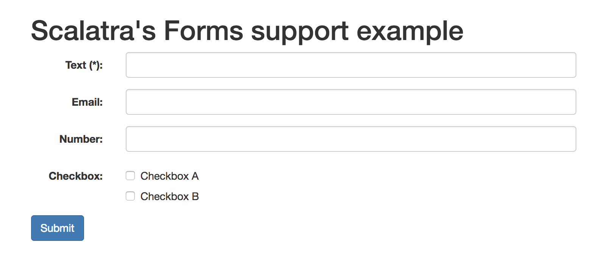

Forms
Since Scalatra 2.6, scalatra-forms which provides form validation is available. You can validate input parameters using forms and convert them to any Scala object such as case class.
Basic usage
Open build.sbt in the root of your project, and add the following line to the libraryDependencies sequence:
"org.scalatra" %% "scalatra-forms" % "2.7.0",
Assuming a HTML form like this:

You can write this form using view helpers in Twirl template as follows:
@()(implicit request: javax.servlet.http.HttpServletRequest)
@import org.scalatra.forms.views._
...
<form action="/" method="POST" class="form-horizontal">
<div class="form-group @if(error("text").nonEmpty){has-error}">
<label class="col-sm-2 control-label" for="text">Text (*):</label>
<div class="col-sm-10">
@Html(text("text", "class" -> "form-control"))
<span class="error">@error("text")</span>
</div>
</div>
<div class="form-group @if(error("email").nonEmpty){has-error}">
<label class="col-sm-2 control-label" for="email">Email:</label>
<div class="col-sm-10">
@Html(text("email", "class" -> "form-control"))
<span class="error">@error("email")</span>
</div>
</div>
<div class="form-group @if(errors("number").nonEmpty){has-error}">
<label class="col-sm-2 control-label" for="number">Number:</label>
<div class="col-sm-10">
@Html(text("number", "class" -> "form-control"))
<span class="error">@error("number")</span>
</div>
</div>
<div class="form-group @if(errors("checkbox").nonEmpty){has-error}">
<label class="col-sm-2 control-label">Checkbox:</label>
<div class="col-sm-10">
<div class="checkbox">
<label>@Html(checkbox("checkbox", "checkboxA")) Checkbox A</label>
</div>
<div class="checkbox">
<label>@Html(checkbox("checkbox", "checkboxB")) Checkbox B</label>
</div>
<span class="error">@error("checkbox")</span>
</div>
</div>
<input type="submit" value="Submit" class="btn btn-primary">
</form>
...
Let’s see how to implement server side validation. At first, make a case class to be mapped parameters sent from this form:
case class ValidationForm(
text: String,
email: Option[String],
number: Option[Int],
checkbox: Seq[String]
)
Next, define a form:
import org.scalatra.forms._
val form = mapping(
"text" -> label("Text", text(required, maxlength(100))),
"email" -> label("Email", optional(text(pattern(".+@.+"), maxlength(20)))),
"number" -> label("Number", optional(number())),
"checkbox" -> list(text())
)(ValidationForm.apply)
Finally, you can use this form in your controller as following (Note: Your controller must extend FormSupport and I18nSupport):
post("/") {
validate(form)(
errors: Seq[(String, String)] => {
BadRequest(html.error(errors))
},
form: ValidatioForm => {
html.result(form)
}
)
}
As you can see, errors is Seq[(String, String)]. The first element of tuple in this sequence is a request parameter name, and the second parameter is an error message.
Form definition
Form consists combination of ValueType and Constraint. scalatra-forms has some ValueType and Constraint in default. You can define your forms using them. Of course, you can define your own rules or constraints if you need.
ValueType
ValueType is simply the converter which converts request parameters to Scala date types. Following ValueTypes are available in default:
text: Map a request parameter toStringproperty.boolean: Map a request parameter toBooleanproperty.number: Map a request parameter toIntproperty.double: Map a request parameter toDoubleproperty.long: Map a request parameter toLongproperty.date: Map a request parameter tojava.util.Dateproperty. You have to specify the date pattern as an argument of this rule.mapping: Map request parameters to any Scala object by aggregating other mapping rules.list: Map an another rule toListby wrapping that. Supports same name parameters and indexed parameter (e.g.xxx[0],xxx[1], …).optional: Map an aother rule toOptionby wrapping that.optionalIfNotChecked: Used toOptionparameter which is optinal if specified checkbox isn’t checked.optionalRequired: Used toOptionparameter which is required if specified condition is true.optionalRequiredIfChecked: Used toOptionparameter which is required if specified checkbox is checked.trim: Trim a request parameter by wrapping an other rule. Normally, this rule is used withtext.label: Specify the propery name which is used in the error message by wrapping an other rule.
Constraint
Constraint is the stuff to add detailed constraints to ValueType. Following constraints are available in default:
required: Specified parameter is required.maxlength: Specify the maximum length.minlength: Specify the minimum length.oneOf: Specify valid values.pattern: Specify the valid pattern as regular expression.datePattern: Specify the valid date pattern.